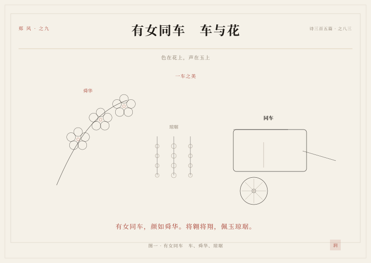
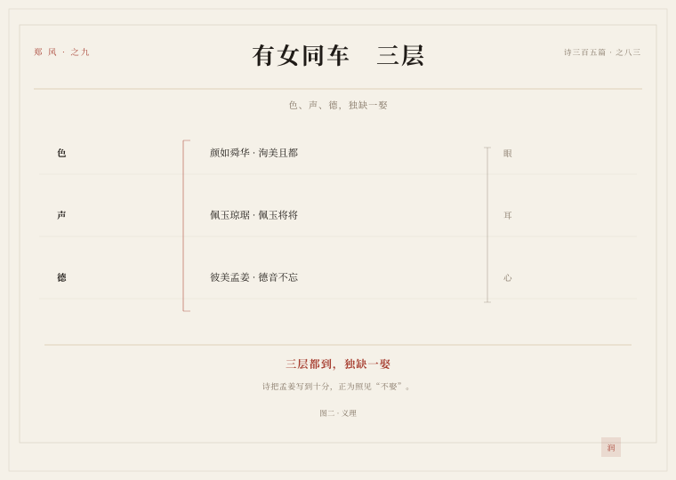

第八十三篇 有女同车
郑风 · 之九 SJ083
朗读 · 普通话
依经文原文朗读，章次不读出；配古琴底乐，不改速、不加拖腔。全库同一音色（豆包 TTS），非播音员录制。
一 解题
诗三判：
- 谁在说：一个看见齐女与郑忽同车的人。他先看脸，再看佩玉，再听玉声，最后说“德音不忘”。眼睛从颜色走到声音，从声音走到德。
- 说什么事：有女同车、同行；颜如木槿，佩玉琼琚，玉声将将；这样的孟姜，美而且都，德音不忘。诗只写“美”，不写“娶”；“不娶”在诗外。
- 为何编在此：郑风之九。082 写“留得住的静好”，083
写“留不住的美”。一间屋里的琴瑟，与一辆车上的玉佩，正好一静一动。
《毛序》：“《有女同车》，刺忽也。郑人刺忽之不昏于齐。太子忽尝有功于齐，齐侯请妻之。齐女贤而不取，卒以无大国之助，至于见逐，故国人刺之。”
朱子《诗集传》：“赋也。同车，二人同车也。舜华、舜英，皆舜木之花也。将翱将翔，言其行貌。琼琚，佩玉名。孟姜，齐女。都，闲雅也。将将，声也。德音不忘，言其德音之不可忘也。○按《春秋传》，忽尝有功于齐，齐侯请妻之，齐女贤而不取，卒以无大国之助，至于见逐，故国人刺之。”
本库的看法：《有女同车》是一首把“美”写成“证词”的诗。
一章看色：舜华；二章听声：琼琚将将；两章都落在“孟姜”。色是眼，声是耳，德是心；三层都到了，诗才说“德音不忘”。
诗面越美，诗骨越可惜：这样的女子，忽不娶；不是她不够好，是他不敢要一个好。
先辨四事：“同车”是二人同车，不是“同姓”；“舜华、舜英”是木槿花，不是舜帝；“将翱将翔”是车行轻扬，不是飞；“都”是闲雅，不是都城。
二 经文
第一章
有女同车，颜如舜华。
将翱将翔，佩玉琼琚。
彼美孟姜，洵美且都。
第二章
有女同行，颜如舜英。
将翱将翔，佩玉将将。
彼美孟姜，德音不忘。
分章：二章，章六句。
三 韵读
- 一章：车、华、琚、都，鱼部；六句一韵到底。
- 二章：行、英、将、忘，阳部；六句一韵到底。
读法：一章鱼部，开口宽；二章阳部，声音亮。由“华”到“英”，由“琚”到“将将”，由“都”到“不忘”；色、声、德，一层一层上去。
四 字义与名物
- 同车/同行：同车而行；行，走。由车到路，是同一场同行。
- 舜华/舜英：木槿花。华、英，皆花；一说“舜”为木槿，朝开暮落。
- 将翱将翔：车行轻扬之貌；不是鸟飞。
- 琼琚：佩玉名；琼，玉之美者；琚，佩玉之一。
- 孟姜：齐女。孟，长；姜，齐姓。
- 洵美且都：确实美，而且闲雅。都，闲雅，不是都城。
- 将将：玉佩相击之声。
- 德音：德行之声、好名声；不忘：不可忘。
五 今译
有位女子与我同车，脸像木槿花。车行轻扬，佩玉琼琚。那位美丽的孟姜，确实美，而且闲雅。
有位女子与我同行，脸像木槿花。车行轻扬，佩玉将将。那位美丽的孟姜，德音令人不忘。
六 章旨
- 一章：写“色”与“都”。舜华是色，琼琚是佩，都是形；“洵美且都”是把美说成有分寸的美。
- 二章：写“声”与“德”。将将是声，德音是德；由耳到心，美才不只是脸。
- 总收：色可悦，德可忘；一车之美，抵不上一国之婚。
诗把孟姜写到十分，正是为了让你看见“不娶”那一处的空。
七 诗教
- 兴：以同车起兴。车是同行的器，舜华是易落的花；一车之美，本来就不长久。
- 观：观“美”的层次。脸、佩、声、德；只看脸，是看了一半。
- 群：一桩婚姻，不只是两个人的事；齐是大国，忽不娶，失的是“大国之助”。美在车上，事在朝上。
- 怨：诗里全是美，怨在“不娶”。把美写到极处，不骂而刺。
八 分寸与边界
- 不可把“同车”当“同姓”。同车是二人共车；一读同姓，诗就成婚制考。
- 不可把“舜华”当舜帝。它是木槿花；一读成人名，颜色就没了。
- 不可把“将翱将翔”当鸟飞。它是车行轻扬；一读成飞，佩玉就没有着落。
- 不可把“都”当都城。它是闲雅；一读成都，美就成地理。
- 不可把“德音”当“德的声音”。它是德行之声、好名声；一读成声音，二章就只剩耳朵。
九 存疑
- 诗旨：毛序“刺忽不昏于齐”；朱子从之。一说美齐女，不一定刺忽；本库从毛、朱，以“美而刺”读。
- “同车”：二人同车；一说婚车亲迎。从“同车”，才与“同行”成对。
- “舜华”：木槿；一说“舜”为草名。从木槿，才见朝开暮落。
- “德音”：德行之声；一说“德音”为“好话”。从“德行”，才与“美”对。
- 作者与年代：毛序引《春秋传》，事在桓公六年、十一年；诗是否当时所作，无确证。
十 跨典
- 《左传·桓公六年》：“齐侯欲以文姜妻郑大子忽，大子忽辞。人问其故，曰：‘齐大，非吾耦也。’”——“不娶”的原文。
- 《左传·桓公十一年》：“忽尝有功于齐，齐侯请妻之。”——毛序所本。
- 《孟子·告子上》：“不知子都之姣者，无目者也。”——美之在眼，可作“舜华”旁证。
- 《诗本音》：二章韵读，车、华、琚、都鱼部，行、英、将、忘阳部，见卷三。
十一 双卡与图
双卡七对：
| 同车（二人同车） |
同车（同姓） |
| 舜华／舜英（木槿花） |
舜华／舜英（舜帝） |
| 将翱将翔（车行轻扬） |
将翱将翔（鸟飞） |
| 琼琚（佩玉） |
琼琚（美玉名） |
| 都（闲雅） |
都（都城） |
| 将将（玉声） |
将将（将领） |
| 德音（德行之声） |
德音（德的声音） |

图一 · 有女同车 车、舜华、琼琚

图二 · 有女同车 色、声、德
读图三处：
- 车只画一半：图一右侧一辆车，只画车厢与一只轮，不画马；“同车”是人同车，不是马同车。
- 木槿在车旁：图一左上木槿一枝，花朝开；画花不画脸，色在花上，不在脸上。
- 玉佩三垂：图一车下三条佩玉，长短不一；“琼琚”是佩，
“将将”是声；画形，声留给诗。